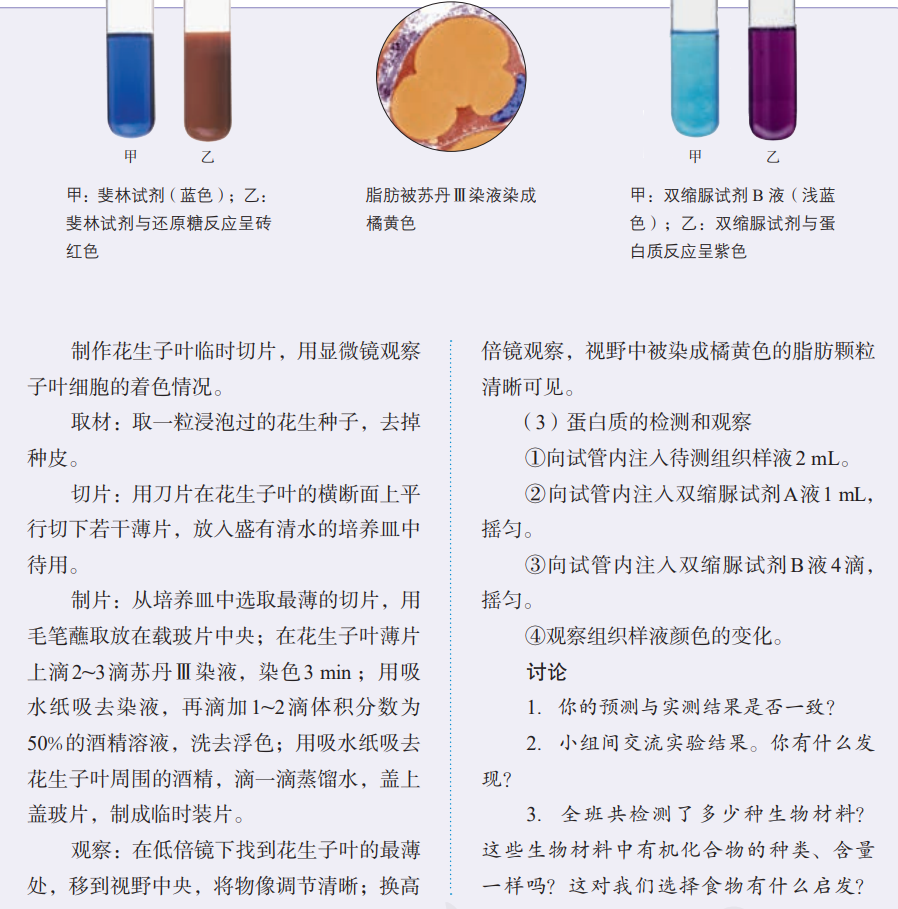
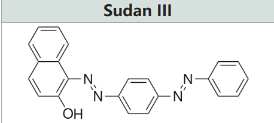
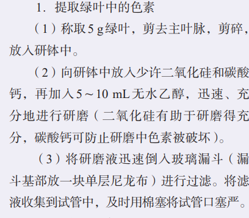
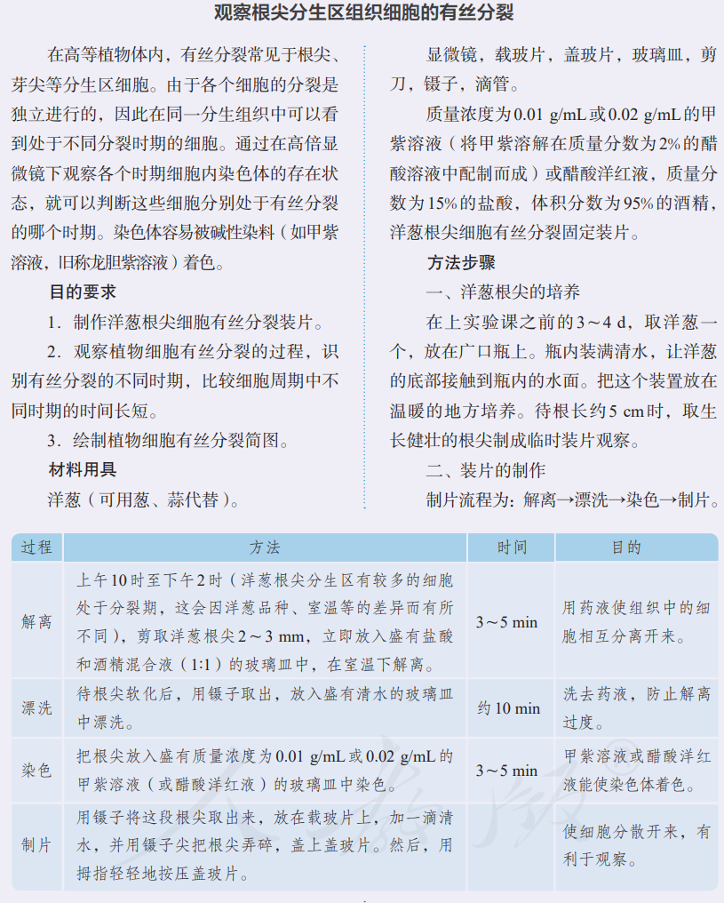
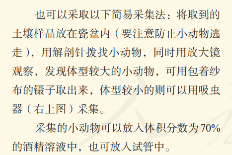
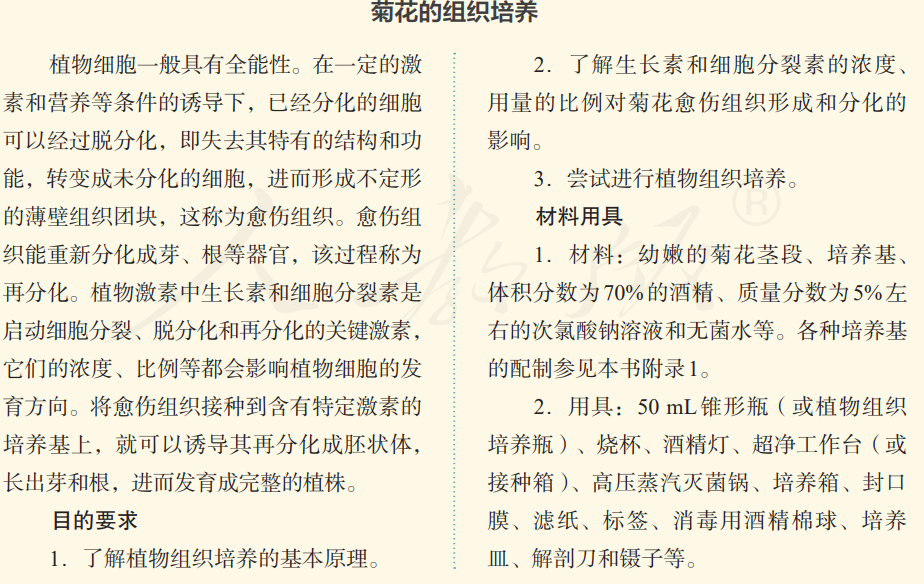
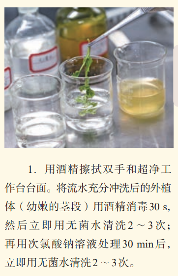
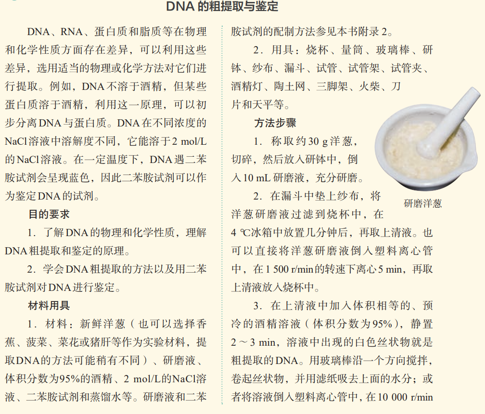
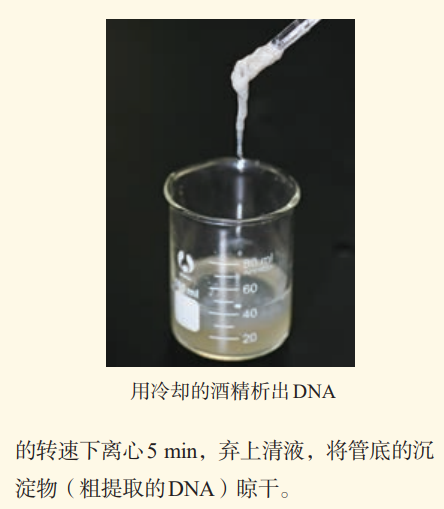
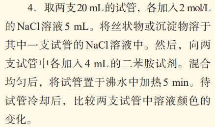

引
在高中生物学中，乙醇(酒精)出现在多处实验操作中:
- 《必修1 分子与细胞》脂肪鉴定
- 《必修1 分子与细胞》光合色素提取
- 《必修1 分子与细胞》配置解离液
- 《选择性必修2 生物与环境》固定保存土壤小动物
- 《选择性必修3 生物技术与环境》消毒
- 《选择性必修3 生物技术与工程》DNA粗提取 内容繁杂琐碎，本文将逐个击破.
脂肪鉴定

- 苏丹III染液
- 体积分数为50%酒精溶液 其中，酒精的作用是洗去浮色.

光合色素提取

- 无水(或体积分数95%的乙醇加入适量无水碳酸钠)
配置解离液

- 0.01g/mL或0.02g/mL的甲紫溶液（将甲紫溶解在质量分数为2%的醋酸溶液中配置而成）或醋酸洋红液
- 质量分数为15%的盐酸
- 体积分数为95%的酒精 解离液是上述盐酸和酒精的1:1混合液，可以让组织中的细胞相互分离开来。
固定保存土壤小动物

消毒
 
DNA的粗提取
  
小结
50%酒精｜脂肪鉴定 作用：洗去浮色
70%酒精 ①土壤小动物：固定保存 ②微生物实验：消毒 ③菊花的组织培养：消毒
95%酒精 ①有丝分裂、低温诱导：和盐酸配解离液，使细胞分离 ②低温诱导：冲洗卡诺氏固定液 ③DNA的粗提取：让DNA析出
无水乙醇｜色素提取 作用：溶解、提取光合色素
真题练习
题目来源：菁师帮 2017-2026北京高考真题生物汇编：细胞的增殖、2017-2026北京高考真题生物汇编：植物细胞工程、2024-2026北京重点校高一（上）期末生物汇编：细胞中的糖类和脂质
本文仅整理题目，不含答案与解析。
1.
(2025 北京昌平高一上期末) 椰子油是一种植物脂肪，在工业生产中应用广泛，同时具有极高的营养价值。相关叙述正确的是（ ）
A. 脂肪的氧含量比糖类更高（含氧量更低，含氢量更高），因此可作为良好的储能物质
B. 脂肪又称三酰甘油，通常由一分子脂肪酸和三分子甘油组成
C. 椰子油在室温下容易成固态，与其含有大量的不饱和脂肪酸有关
D. 用苏丹Ⅲ染液对椰肉细胞进行染色，可观察到部分区域被染成橘黄色 正确答案:D
2.
(2026 北京高考真题) 下列使用显微镜的高中生物学实验中，相应操作与目的不匹配的是（ ）
A. 为使高倍物镜下观察到的细胞变清晰，调节细准焦螺旋
B. 为观察到黑藻叶肉细胞中叶绿体的运动，取用生长旺盛的叶片（叶绿体呈绿色，且生长旺盛的叶片细胞代谢活跃，叶绿体运动更明显）
C. 为清晰观察植物细胞的吸水和失水，用苏丹Ⅲ染料对液泡染色
D. 为清晰观察根尖细胞的有丝分裂，用盐酸解离根尖 正确答案:C
3.
(2022 北京高考真题) 实验操作顺序直接影响实验结果。表中实验操作顺序有误的是（ ）
| 选项 | 高中生物学实验内容 | 操作步骤 |
|---|---|---|
| A | 检测生物组织中的蛋白质 | 向待测样液中先加双缩脲试剂 A 液，再加 B 液（A:0.1g/mL NaOH,B:0.01g/mL CuSO4） |
| B | 观察细胞质流动 | 先用低倍镜找到特定区域的黑藻叶肉细胞，再换高倍镜观察 |
| C | 探究温度对酶活性的影响 | 室温下将淀粉溶液与淀粉酶溶液 |
| D | 观察根尖分生区组织细胞的有丝分裂 | 将解离后的根尖用清水漂洗后（）防止解离过度），再用甲紫溶液染色 |
A. A B. B C. C D. D 正确答案:C
4.
(2020 北京高考真题) 下列高中生物学实验中，用紫色的洋葱鳞片叶和黑藻叶片作为实验材料均可完成的是（ ）
A. 观察叶绿体（洋葱鳞片叶细胞不含叶绿体）和细胞质流动
B. 提取和分离叶绿素（同A）
C. 观察细胞质壁分离及复原
D. 观察细胞的有丝分裂(叶片细胞为高度分化的成熟细胞，没有细胞周期) 正确答案:C
5.
(2017 北京高考真题) 洋葱根尖和小鼠骨髓细胞都能用于观察细胞有丝分裂，下列有关叙述正确的是（ ）
A. 都（动物细胞用胰蛋白酶或胶原蛋白酶处理）需要用盐酸溶液使细胞相互分离
B. 都需要用低倍镜找到分裂细胞再换高倍镜观察
C. 在有丝分裂中期都能观察到染色体数目加倍（中期没有染色体数目加倍）
D. 在有丝分裂末期都（动物细胞不产生细胞板）能观察到细胞板 正确答案:B
6.
(2024 北京高考真题) 五彩缤纷的月季装点着美丽的京城，其中变色月季“光谱”备受青睐。“光谱”月季变色的主要原因是光照引起花瓣细胞液泡中花青素的变化。下列利用“光谱”月季进行的实验，难以达成目的的是（ ）
A. 用花瓣细胞观察质壁分离现象
B. 用花瓣大量提取叶绿素(叶绿体数量极少)
C. 探索生长素促进其插条生根的最适浓度
D. 利用幼嫩茎段进行植物组织培养
正在加载评论…